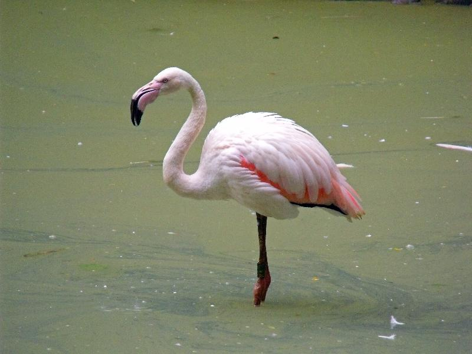

Животные киевского зоопарка
- Пантера тигр
- Енот полоскун
- Благородный олень
- Носуха
- Лесной кот
- Пиранья
- Казуар
- Беркут
- Розовый фламинго
- Крилан
Пантера Тигр
Тигр
(лат. Panthera tigris) — вид хищных млекопитающих семейства кошачьих, один из четырёх представителей рода пантера (лат. Panthera), который относится к подсемейству больших кошек. Слово «тигр» происходит от др.-греч. τίγρις, которое в свою очередь восходит к др.-перс. *tigri от корня «*taig» со значением «острый; быстрый». Среди представителей этого вида встречаются крупнейшие животные семейства кошачьих. Тигр является одним из крупнейших наземных хищников, уступая по массе лишь белому и бурому медведям. Выделено девять подвидов тигра, из которых к началу XXI века сохранились лишь шесть. Общая численность составляет порядка 4000 — 6500 особей, из них самым многочисленным является бенгальский тигр (номинативный подвид), составляющий 40 % от всей популяции.
Енот полоскун
Енот-полоскун
, или американский енот (лат. Procyon lotor) — хищное млекопитающее рода еноты семейства енотовых. Один из немногих видов, которые процветают в условиях усиления антропогенного воздействия, выражающегося в постепенном окультурировании угодий. Енот хорошо приживается в местах интродукции, хотя и является в целом теплолюбивым видом. На территории России вид хорошо освоил западные (причерноморские) и восточные (прикаспийские) регионы Северного Кавказа, где превратился в опасный инвазионный вид, угрожающий местной флоре и фауне. B Белоруссии хорошо прижился в Полесье. Енот легко приручается и подходит для разведения в неволе.
Благородный олень
Благоро́дный
олень или настоящий олень (лат. Cervus elaphus), — парнокопытное млекопитающее из семейства оленевых. Благородный олень обитает в большей части Европы, на Кавказе, в Малой Азии, Иране, в некоторых частях Западной и Центральной Азии. Он также обитает в регионе Атласских гор между Марокко и Тунисом на северо-западе Африки, являясь единственным видом оленей, обитающих в Африке. Благородные олени были завезены в другие районы, включая Австралию, Новую Зеландию, США, Канаду, Перу, Уругвай, Чили и Аргентину. Во многих частях мира мясо оленя используется в качестве еды.
Носуха
Носухи
названы так за небольшой подвижный хоботок, образованный передней частью верхней губы и удлинённым носом. Длина тела 41—67 см, хвоста 32—69 см. Масса около 11 кг. Туловище удлинённое, конечности средней высоты, передние короче задних. Хвост очень длинный. Шерсть короткая, мягкая или - высокая и несколько более грубая. Окраска спины рыжевато-бурая, рыжевато-буро-серая или чёрная, брюхо черноватое или тёмно-бурое. Морда, щёки и горло обычно беловатые, лапы черноватые. На морде бывают чёрные пятна. Хвост в более светлых и тёмных, чем окрас туловища, кольцах. Носухи распространены почти по всей Южной Америке, по всей Центральной Америке, почти по всей Мексике, кроме полуострова Калифорния и центральных районов страны; в США — юго-восток Аризоны, юго-запад Нью-Мексико, крайний юг Техаса.
Лесной кот
Лесной
кот, или лесна́я ко́шка, или ди́кая ко́шка, или ди́кий кот, или европе́йская ко́шка, или европе́йский кот (лат. Felis silvestris от лат. fēles (fēlis) — «кошка», лат. silvestris — «лесной, находящийся, живущий или растущий в лесу, дикий, дикорастущий») — хищное млекопитающее из семейства кошачьих. В таксономии продолжаются споры, относятся ли европейские, азиатские и африканские дикие кошки к разным видам или подвидам. Согласно таксономической классификации, принятой в 2017 году, существует 2 вида: лат. Felis silvestris («европейский дикий кот», обитает в Европе, на Кавказе и в Турции) и лат. Felis lybica («африканский дикий (степной) кот», обитает в странах Африки, Ближнего Востока, Средней и Центральной Азии, в низовьях Волги). Ранее их относили к одному виду. Оба вида имеют подвиды. Пиранья
Пиранья
Обыкновенная
пиранья (лат. Pygocentrus nattereri) — вид хищных лучепёрых рыб из подсемейства пираньевых (Serrasalminae) семейства харациновых (Characidae) или (по другой классификации) семейства пираньевых (Serrasalmidae). Это один из самых известных видов пираний, имеет репутацию пресноводного хищника, опасного для животных. Для живого человека они опасности не представляют в связи с размером и пугливостью самих пираний.Длина тела составляет около 15 см, максимальная — 50 см. Максимальная масса тела 3,9 кг. Челюсть пираньи. Челюсть пираньи. У всех пираний большие рты с выступающими острыми зубами. Виды пираний отличаются друг от друга расцветкой: у большинства рыб оливково-зелёная или чёрная с синевой спина, а брюхо и бока тёмные или серебристо-серые.
Казуар
Шлемоно́сный
казуа́р, или обыкновенный казуар, или южный казуар (лат. Casuarius casuarius) — наиболее распространённый вид из семейства казуаровых. Шлемоносный казуар достигает высоты 1,5 м и веса около 80 кг. Имеет жесткое чёрное оперение, длинную шею, массивные ноги; вокруг горла свисают красные бородки (длиной до 17 см). Молодые особи имеют коричневое оперение. На голове казуар имеет вырост, называемый «шлемом», который у самцов крупнее, чем у самок. Окраска свисающих складок кожи на шее, или сережек, может меняться в зависимости от настроения казуара. Массивные трёхпалые ноги этой новогвинейской птицы вооружены большими когтями, особенно длинным является коготь внутреннего (первого) пальца.
Беркут
Бе́ркут
(лат. Aquila chrysaetos) — одна из наиболее известных хищных птиц семейства ястребиных, самый крупный орёл. Распространён в Северном полушарии, где обитает преимущественно в горах, в меньшей степени на равнинных открытых и полуоткрытых ландшафтах. Избегает жилых районов, чувствителен к беспокойству со стороны человека. На большей части ареала живёт оседло, держится парами возле гнезда, на северной периферии области распространения и высокогорья часть птиц откочёвывает в менее снежные районы. Охотится на самую разнообразную дичь весом от 0,4 до 5 кг, чаще всего на зайцев, грызунов и многие виды птиц, поедает падаль. Изредка нападает на ягнят и детёнышей оленей, либо на больных и раненых более крупных животных. Гнездо устраивает на дереве либо на труднодоступном скалистом уступе.

Фламинго
Флами́нго
(лат. Phoenicopterus) — род птиц из семейства фламинговых отряда фламингообразных. У фламинго тонкие длинные ноги, гибкая шея и оперенье, окраска которого варьирует от белого до красного цвета. Их особым отличительным признаком является массивный выгнутый вниз клюв, с помощью которого они фильтруют пищу из воды или ила. Передние пальцы ног соединены плавательной перепонкой. Розовую или красную окраску оперению фламинго придают красящие вещества, которые птицы получают вместе с пищей. При опасности они взлетают, и хищнику трудно выбрать из них определённую жертву, тем более что маховые перья на крыльях всегда чёрные, и при полёте они мешают сфокусироваться на жертве.
Крилан
Крилан
(Pteropus) — рід рукокрилих, родини Криланових, що об'єднує 65 видів тварин. Це найбільші рукокрилі в світі. Етимологія: дав.-гр. πτερόν — «крила», дав.-гр. πούς — «ступня, нога». Живуть у Азії, тропічній і субтропічній, в тому числі в Індії, в Австралії, Океанії, островах поблизу Африки (але не в самій Африці) та на ряді віддалених індійськоокеанських та тихоокеанських островів. Населяють ліса, болота, часто малі острови неподалік від узбережжя. Морфометрія. Довжина голови й тіла: 170—406 мм, довжина передпліччя: 85—228, розмах крил: 610—1700. Найбільший вид P. vampyrus. Вага P. personatus 104—153 грам, P. hypomelanus 300—455 грам, P. rayneri 800—870 грам, P. mahaganus 1220—1250 грам, P. giganteus самці 1300—1600, самиці ≈ 900 грам.